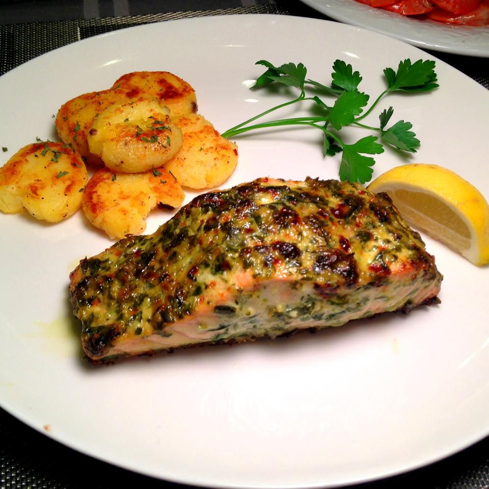

Chef John's Salmon

Delicious Garlic and Herb Salmon
Salmon broiled with an herb and garlic spread. Perfect for anyone on a low carb diet.
Ingredients
- 2 (8 ounce) center-cut salmon fillets, with skin
- 1/4 tsp kosher salt
- 1 tsp vegetable oil
- 1 clove garlic, sliced
- 1 tbsp chopped fresh tarragon
- 1 tbsp chopped fresh flat-leaf parsley
- 3 tbsp mayonnaise
- 1 tsp Dijon mustard
- 1 tsp fresh lemon juice
- 1 pinch cayenne pepper
Steps
- Season salmon fillets with kosher salt. Line a baking sheet with foil and brush lightly with vegetable oil.
- Preheat over's broiler on high and set the over rack about 8 inches from the heat source.
- Process garlic, tarragon, and parsley in a blender or mortar and pestle to form a loose paste
- Mix mayonnaise, Dijon mustard, lemon juice, and cayenne pepper into garlic paste until combined.
- Place salmon fillets skin side down on the baking sheet. Spoon herb spread over the top and sides of each fillet.
- Cook under the preheated broiler until fillets are well-browned, about 5 minutes. Turn the broiler off and turn the oven to 350 degrees F (175 degrees C).
- Bake until the internal temperature of the salmon is 130 degrees F (55 degrees C) and salmon flakes easily with a fork, about 3 to 4 minutes.